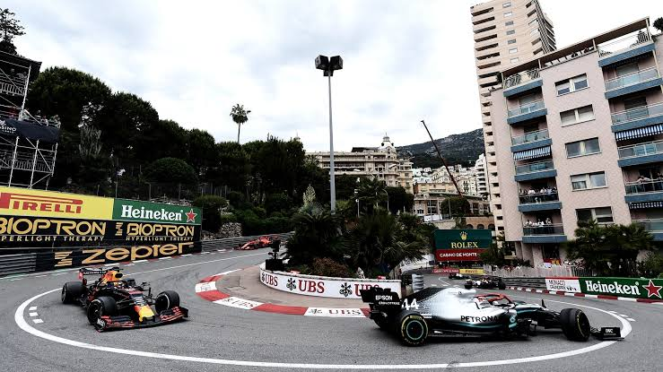
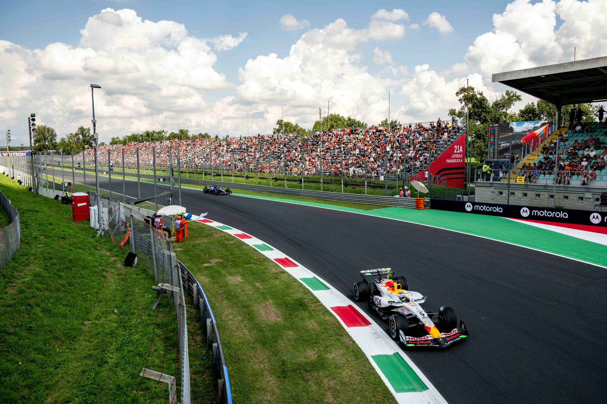
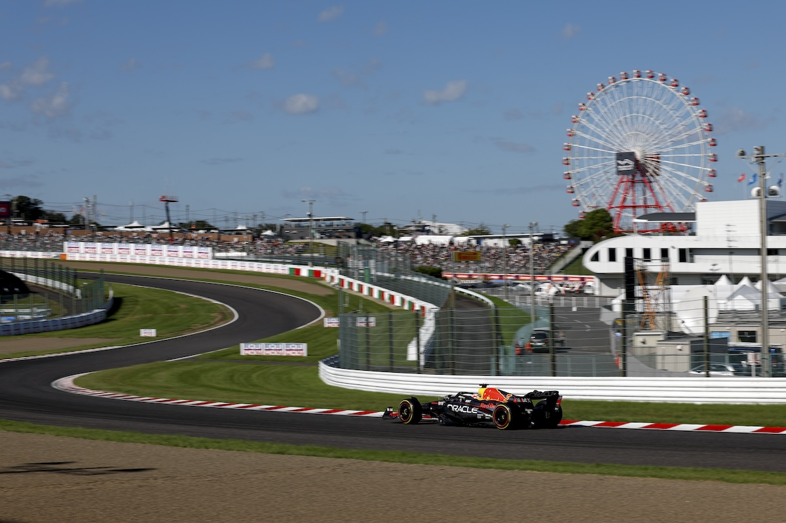
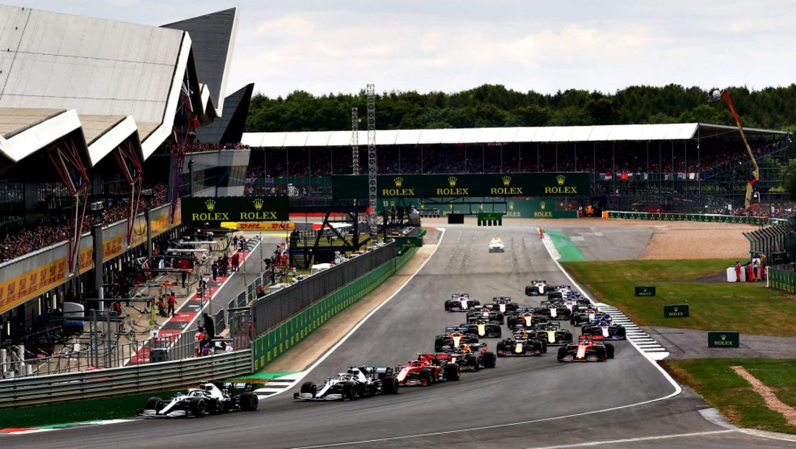
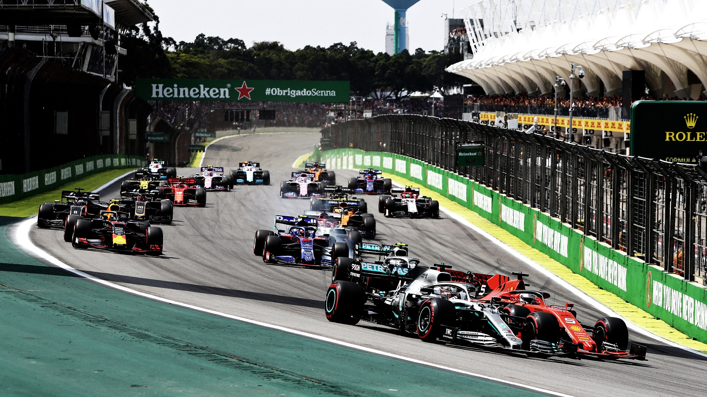

Mónaco
Un trazado urbano estrecho que exige precisión, concentración y una buena posición de salida.
PrecisiónLas rectas, curvas, frenadas y condiciones de cada trazado hacen que las carreras de Fórmula 1 sean diferentes entre sí.
Estos trazados son conocidos por sus características, su historia y los desafíos que presentan a los pilotos.

Un trazado urbano estrecho que exige precisión, concentración y una buena posición de salida.
Precisión
Es conocido por sus largas rectas y las altas velocidades que alcanzan los monoplazas.
Velocidad
Su combinación de curvas rápidas y cambios de dirección representa un desafío técnico para los pilotos.
Técnica
Una pista histórica con curvas rápidas y una larga tradición dentro del campeonato.
Tradición
Su trazado con desniveles y sus carreras cambiantes pueden producir finales impredecibles.
Desafío
El Gran Premio de México destaca por la altitud, el ambiente de los aficionados y el sector del estadio.
AltitudLa selección de circuitos es ilustrativa. El calendario de la Fórmula 1 puede cambiar entre temporadas.
Los equipos ajustan la aerodinámica, los neumáticos y la configuración del monoplaza según las características de la pista.
Volver a las escuderías